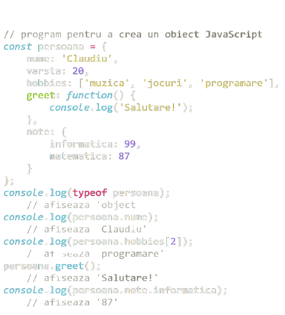
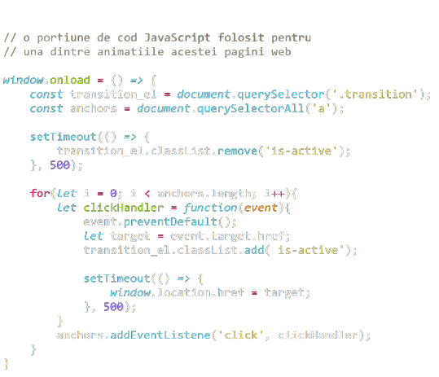

<body>
</body>
<html>
</html>
<h2>
</h2>
<p>
</p>
Exemple de cod JavaScript


Limbajul JavaScript
JavaScript este un limbaj de programare pe partea de
client care rulează într-un browser client și procesează
comenzi pe un computer mai degrabă decât pe un server.
Este de obicei plasat într-un fișier HTML sau ASP. În ciuda
numelui său, JavaScript nu are legătură cu Java.
Cine îl folosește?
- Profesii și industrii:
-
Dezvoltatori JavaScript, dezvoltatori web, ingineri software
-
Folosit de angajatori în tehnologia informației,
inginerie, proiectare, marketing, finanțe și asistență medicală
- Organizații majore: WordPress, Soundcloud, Khan Academy, Linkedin,
Groupon, Yahoo
- Specializări:
Dezvoltare site-uri web partea Front End, dezvoltare jocuri
Ce face ca învățarea lui să fie importantă?
-
JavaScript este utilizat în principal în dezvoltarea web pentru a manipula
diferite elemente ale paginii și a le face mai dinamice, inclusiv abilități
de scrolling, imprimarea datei și orei, crearea unui calendar și alte sarcini
care nu sunt posibile prin HTML simplu. Poate fi folosit și pentru a crea
jocuri și API-uri.
-
Agenția Cyber-Duck din Marea Britanie folosește API-uri publice,
create cu JavaScript, pentru a extrage date despre criminalitate și
permite utilizatorilor să revizuiască o zonă locală.
-
Tweetmap, creat de Pete Smart și Rob Hawkes folosind JavaScript, reprezintă o
hartă a lumii care este proporțională în funcție de numărul de tweet-uri.
-
Caracteristici:
-
Caracteristicile de bază sunt ușoare de învățat
-
Multiple framework-uri
-
Utilizatorii pot face apela la JQuery,
o bibliotecă cuprinzătoare Javascript
De unde a început?
JavaScript a fost proiectat de Netscape și cunoscut inițial
ca LiveScript, înainte de a deveni JavaScript în 1995.